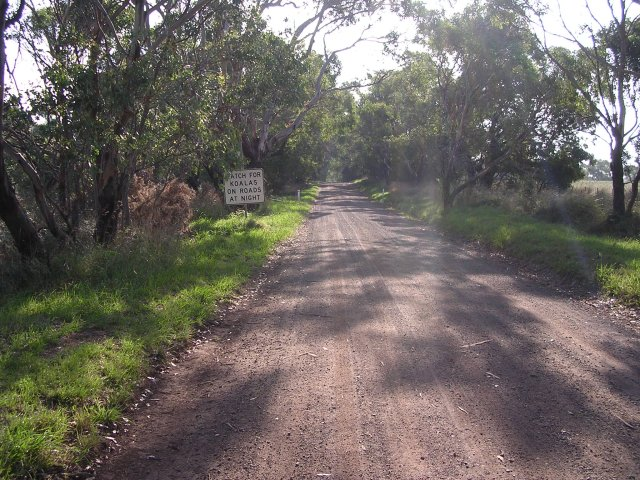
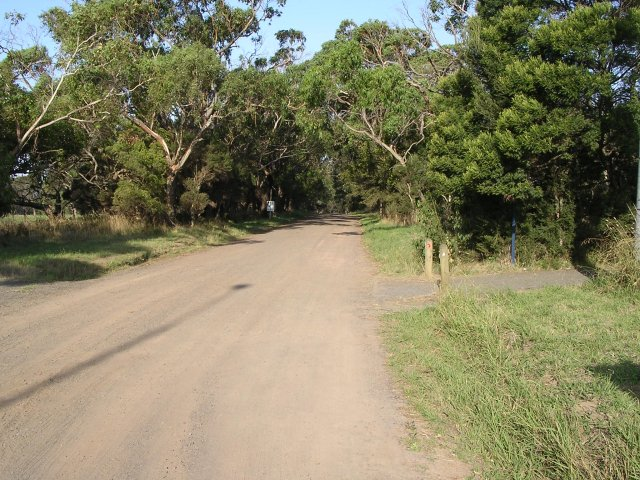
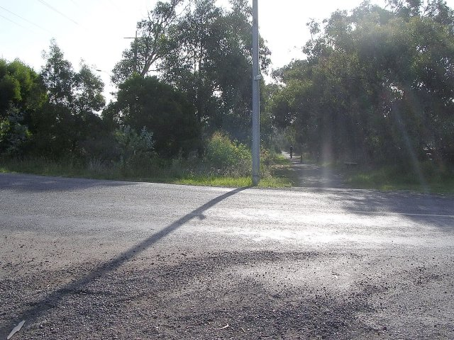
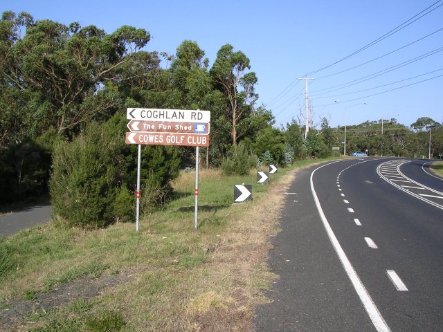
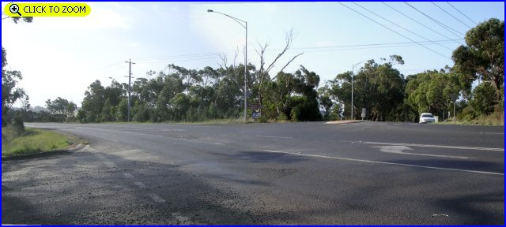
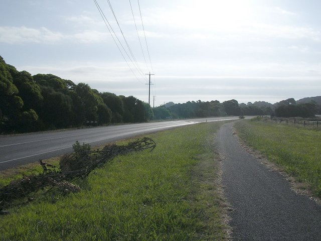
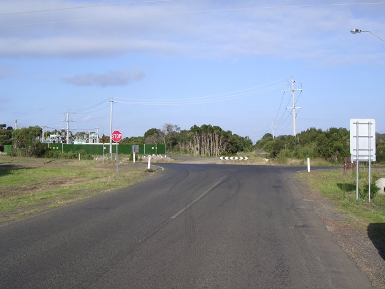

Numbers on the map represent the location where the photographs were taken. Scroll down to view the photographs.
Phillip Island (1925-34 TT circuit) - Harbison Road to Gentle Ann Corner.
|| Contents || Ventnor Rd. to Harbison Rd. | Harbison Rd. to Gentle Ann | Gentle Ann to Ventnor Rd. || Home ||
Numbers on the map represent the location where the photographs were taken. Scroll
down to view the photographs.
Return to racingcircuits.net's Photo Archive Main Index

8 - Original dirt road.

9 - End of Harbison Road.

10 - The road used to go straight on at this point.

11 - Road came out here.

12 - Present day intersection at Five ways. Left out of Harbison Road and
a right into what is now Phillip Island Road [Click here to zoom in]

13 - Road alignment used to follow power lines.

14 - Road came out at the black and white sign at Gentle Ann corner.
| << PREVIOUS PAGE |
Photographs and Text ©Neil Fackerell. Reproduced here with kind permission.